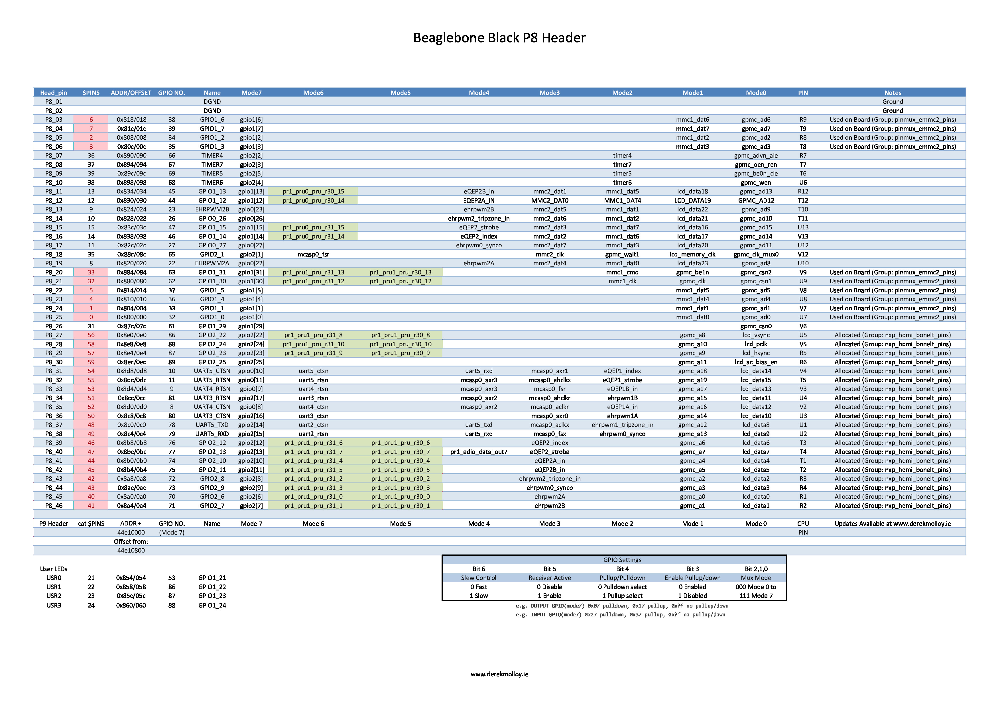
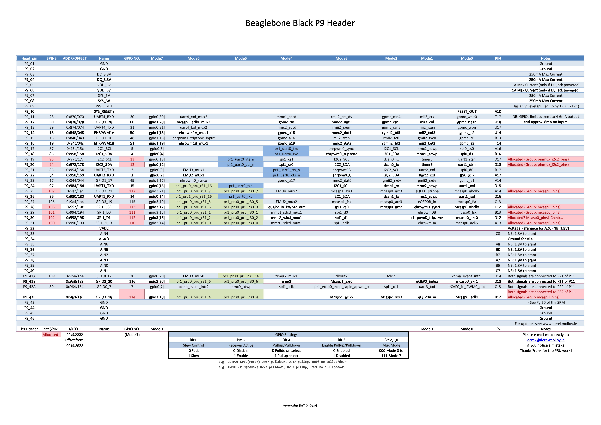

參考資訊：
https://github.com/derekmolloy/boneDeviceTree
GPIO的Offset位址計算，可以參考https://e2e.ti.com/support/arm/sitara_arm/f/791/t/432824?How-to-determine-gpio-address-for-dts-file-，原則上就是0x44e10800(pinmux@44e10800)-xxx的位址，如：conf_rmii1_refclk(查詢Table 9-8. CONTROL_MODULE REGISTERS後，可以得知是位址0x944)，所以Offset位址就是0x944-0x800=0x144，因此，宣告在DTS檔案中的Offset位址就是0x144數值

